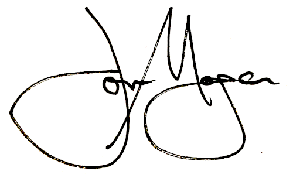

Melbourne, VIC | 0429 357 751 | jonmorgan@fastmail.com | linkedin.com/in/linkjonmorgan
I am writing to express my strong interest in the EPMO Optimisation Lead position at V/Line. While my professional background is in systems engineering, software automation, and corporate governance rather than traditional project management offices, the core of this role matches my 30-year career: making complex systems work, designing clear frameworks to meet regulatory and permit requirements, and translating technical details into straightforward advice for executive decisions.
My experience directly aligns with the continuous improvement objectives outlined in the V/Line position description:
V/Line requires a framework designer who can step into an environment with many moving parts, look at existing systems with an analytical eye, and build reliable, repeatable structures. My background in systems engineering and automation allows me to quickly find inefficiencies, ensure regulatory compliance, and implement changes that reduce delivery risks across a public infrastructure network.
Having spent my career as a consultant on major, multi-year construction projects, I understand both the value of long-term planning and the demand for fast, high-pressure execution when construction crews are on-site and decisions cannot wait. I want to bring my experience in automation, governance, and quality control in-house to help deliver long-term value, reliability, and operational clarity for Victoria's public transport network.
Thank you for your time and consideration. I welcome the opportunity to discuss how my systems optimisation background can support V/Line’s project governance strategy.

Jon Morgan